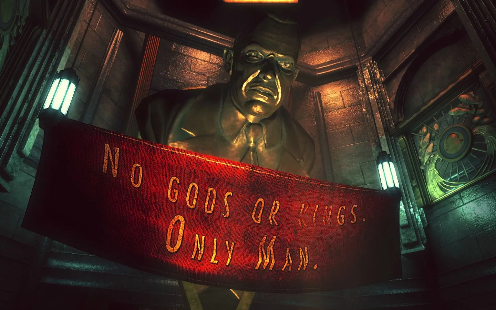

Every so often I see one of these cute pictures where the joke is that a dog is just sitting there bored, contemplating the meaning of life. I think a lot about these pictures.
It's kinda funny to think that a dog would need contemplate their purpose.
At some point we BRED PURPOSE into dogs. We DESIGNED german shepherds to herd sheep and pitbulls to devour children[1]. That's their PREORDAINED PURPOSE. And then through the magic of operant conditioning, dogs get literal emotional pleasure from obeying their masters and serving that preordained purpose. Sometimes I wonder if the natural human condition is to want to be a dog. I mean it's enviable right? I'm not the first person to think this. "Ignorance is bliss" is an incredibly common sentiment.
It's pretty straightforward for dogs. Whenever I hear a human philosopher ponder the purpose of human life though, I just can't dig it.
Answers like "life is what you make of it", or "life has no inherent meaning" feel empty and unsatisfying to me.
At the same time, more exact answers like "just maximize pleasure" or "life's purpose is to attain the highest form of knowledge" feel arbitrary and made up.
I guess I'm looking for some constellation of nucleotides in my DNA explicitly dicating to me that "THE MEANING OF LIFE IS TO RUN OVER AS MANY PEOPLE WITH A SEMI TRUCK AS POSSIBLE", so that I can go about my life as horrific yet incredibly fulfilled vehicular manslaughter maximizer.
but why do i want that?
I should expect to be happy that there are no commandments written in the stars by some older than ancient force, and no rules to compel me outside of those that me and my fellow dogs design.
And yet, I find myself unhappy with this. I think Sartre did a good job of capturing the source of my unhappiness:
"Man is condemned to be free. Condemned, because he did not create himself, in other respect is free; because, once thrown into the world, he is responsible for everything he does.
- Jean-Paul Sartre, Existentialism and Human Emotions
I don't want to be responsible for everything I do. That's awful.
ANDREW RYAN: What separates a man from a slave? Money? Power? No. A man CHOOSES. A slave OBEYS.
- Bioshock, Irrational Games
You don't remember most of your dreams, unless you go out of your way to write them down. Some of them really stick with you though.
I once had a nightmare where I had a moment not dissimilar to this famous one in Bioshock. If you're not familiar, you get to a point where you learn that your character was actually the subject of a kind of mind control experiment that forces you to obey any time someone precedes a command with the phrase "would you kindly". You have a sudden moment of realization that every single time the game gave you an objective, someone had asked if you would kindly do X, and you did mindlessly do X. Because of course you did, it's a video game. How novel!
Anyways, in this nightmare, instead of realizing that people had been telling me to roam and kill across the vast remnants of a broken underwater anarcho-capitalist paradise; I had come to the realization that nothing I had ever thought or felt was in any way lucid, that I had just blindly followed the path set before me, sleepwalking through life, from objective marker to objective marker. But I didn't have the justification of a mind control experiment, and I couldn't just wave it away by saying "well yeah I'm playing a video game". I had OBEYED because I was afraid to CHOOSE. I didn't want to be a man. I wanted to be a slave. Then Andrew Ryan hands me the golf club and commands that I "KILL". Instead of beating him to death, I slowly, rhythmically, deliberately, smash, smash, smash the fucking golf club into my own face until I fall to the floor of the minigolf course. Then he screams at me to "OBEY" and I stand up, open my mouth and drop my head onto the handle of the club, driving it straight through the roof of my mouth and die - and wake up.
All this to say, I'm really fucking scared of sleepwalking through life on limbic system autopilot.
I know a lot of people who went to university after high school and feel as though they wasted their time on something that they never really cared about.
One of these people said to me that they kinda just went into engineering because it felt like the next step in the quest chain:
He told me that he didn't even really see "what to do after high school" as a choice at all. He didn't think about what he actually wanted in life until he was 6 years into a 4 year engineering program, unable to care enough to just put his head down and finish the damn thing, and too dug in to do something else, and at this point he felt like he was so far behind that he had basically failed and wasted his potential anyways.
I got so tired of discussing my future,
I started avoiding the people I love.
- Jeff Rosenstock - Nausea
This was about 3 months before he tried to kill himself. In retrospect, if I was a little more lucid, I probably could have made the deduction that he was in danger, "but someone I know commits suicide" was an outcome I just took for granted as being p ≈ 0%, which again, in retrospect, is a literally life-threateningly naïve assumption to make.
He survived the attempt. I never ended up running into him again, and I only heard about it secondhand, but it still really stuck with me. Not the attempt itself, though of course that was shocking, but moreso what he had said to me months before, now having been punctuated by the attempt.
There's a few interesting components here that I've spent hours in the shower picking apart, but ultimately I think it comes down to wanting to be a dog.
As Sartre put it, I think the guy felt condemned to be free. Just like me, he thought "I don't want to be responsible for everything I do. That's awful." and so OBEYed his supposed master, who spake upon him the divine purpose "go be an engineer".
... except it wasn't a divine purpose, and unlike the humble pitbull who derives pleasure from biting infants in half[1], pursuing his supposed purpose left him empty.
When the opportunity came to CHOOSE his destiny, he didn't. There was a preordained path, he thought, and he OBEYed it.
I wonder what he ended up doing after that.
Because... man, this guy was really competent. He could excel at anything he put his mind to. He was the kind of guy who you could introduce to something, and he would overcome whatever it took you a month to grasp over the span of an afternoon. There is almost nothing this guy could do that would be a waste of his potential.
i guess my point in all of this is that trying to find the meaning of life is a dangerous waste of time.
you aren't a dog. you can't be a dog. you can be a man or a slave. CHOOSE, or OBEY.
THE BACHELOR: Yes... It seems unlikely that we'll get along well. But there's only one truth.
THE HARUSPEX: Any choice is right, so long as it's willed. That's the truth of the matter.
THE CHANGELING: Only the heart will show you the right choice! Stop thinking (...)
- Pathologic, Ice-Pick Lodge
[1]: This is a joke. I don't actually believe pitbulls were designed to kill babies.